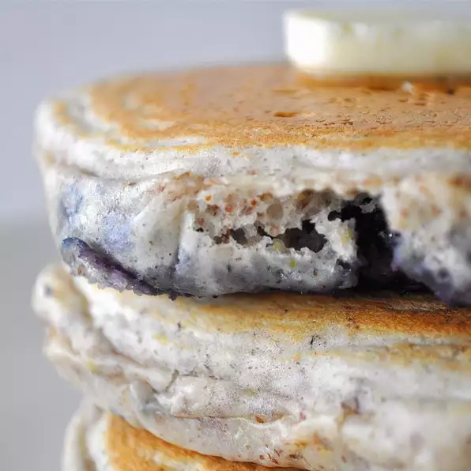

Blueberry Flax Pancakes

Fluffy pancakes with ground flax seed and blueberries for a healthier, fiber filled pancake.
Ingredients
- 1 1/2 Cups dry pancake mix
- 1/2 Cup flax seed meal
- 1 Cup skim milk
- 2 Eggs
- 1 Cup fresh blueberries
Steps
- Set a nonstick skillet over medium heat.
- Stir together the pancake mix and flax seed meal.
- Whisk together the milk and eggs. Pour the liquid into the dry ingredients, and stir just until moistened.
- Spoon 1/4 cupfuls of batter onto the hot skillet. Sprinkle with as many blueberries as desired.
- Cook until bubbles appear on the surface, then flip and cook until browned on the other side.